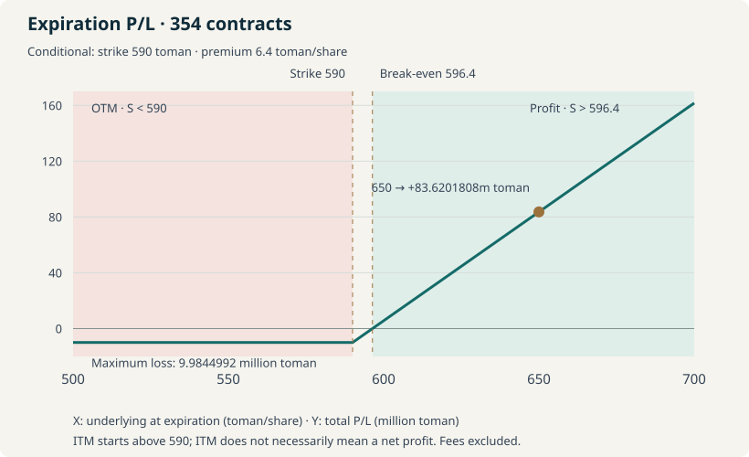
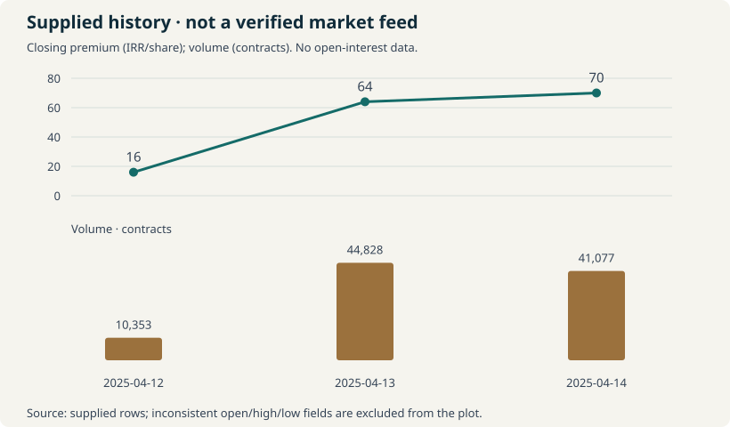

Unit convention throughout this historical example: 1 toman = 10 IRR. Entry premium is 64 IRR per underlying share, or 6.4 toman. Never add a rial premium to a toman strike without converting first.
Unresolved contract input: the supplied strike is “590” with conflicting unit labels. The premium reconciles to approximately 10 million toman, but that does not establish the strike unit. Calculations below show both interpretations; the main scenario chart conditionally assumes 590 toman = 5,900 IRR. The contract specification has not been independently verified.
This reference reconstructs a supplied historical trade example; it does not authenticate an execution record. Options are leveraged derivatives: buyers can lose the entire premium, while writers can face materially different and potentially much larger losses. This is educational material, not personalized financial advice.
Jump to: Unit reconciliation · Break-even · Exercise cash · Scenarios · Sell or exercise · Historical data issues · Cheat sheet.
1. What an Option Contract Is
| Term | Meaning |
|---|---|
| Call / put | A call gives the holder a right to buy; a put gives a right to sell the specified underlying quantity at the strike, subject to the contract’s exercise terms. |
| Buyer / writer | The buyer pays for a right. A writer opens a short position and accepts the corresponding obligation if assigned. Selling an existing long position to close it is different from writing a new option. |
| Premium / strike | Premium is the option price paid up front; strike is the per-share transaction price on exercise. Both require an explicit currency unit. |
| Expiration / multiplier | Expiration limits the contract’s life. The multiplier specifies shares per contract and can be adjusted; it is not universally 1,000. |
| Exercise / physical settlement | Exercise invokes the contract. Physical settlement transfers shares and cash; a cash-settled contract instead settles the prescribed difference under its rules. |
| Intrinsic / time value | Call intrinsic value is max(0, spot − strike); put intrinsic value is max(0, strike − spot). The excess of an option quote over intrinsic value is commonly called time or extrinsic value. |
Bank Tejarat shares (وتجارت)
-> Call contract (ضجار2054)
-> Multiplier: 4,407 shares per contract (supplied)
-> Strike: 590 [unit unresolved]
-> Entry premium: 64 IRR per share
-> Expiration: 17 Ordibehesht [verify year and cutoff]
-> Close in market OR exercise/settle under contract rules| State | Call | Put |
|---|---|---|
| OTM — no intrinsic value | Spot < strike | Spot > strike |
| ATM — at the strike | Spot = strike | Spot = strike |
| ITM — positive intrinsic value | Spot > strike | Spot < strike |
Moneyness ignores the premium paid: an ITM call can still be a losing trade. For general payoff definitions, see the Options Industry Council’s long-call guide. Its educational concepts apply here; US contract sizes and exercise procedures must not be imported into Iranian contracts.
2. Spot vs Futures vs Options
| Feature | Cash stock purchase | Futures | Long option / option writer |
|---|---|---|---|
| Ownership | Own shares after settlement. | Contract exposure, not immediate share ownership. | Long option owns a right; writer owes performance if assigned. |
| Obligation | Pay for the shares purchased. | Both sides have contractual obligations unless closed. | Buyer may exercise under terms; writer must meet assignment obligations. |
| Capital / margin | Full purchase cost when unleveraged. | Initial and variation margin; additional cash may be needed. | Buyer funds premium; physical exercise needs further cash. Writer collateral/margin depends on rules. |
| Leverage | None for an unleveraged cash purchase. | Notional can exceed margin deposited. | Exposure can be large relative to premium or collateral. |
| Maximum loss | Purchase cost for unleveraged long shares, if value reaches zero. | Can exceed initial margin; depends on position and underlying. | Buyer: premium plus costs before exercise. Uncovered call writer: theoretically unlimited loss. |
| Expiration | No derivative expiry. | Contract expires. | Option expires. |
| Risk | Share-price and issuer risk. | Price moves, leverage, margin calls, settlement. | Time decay, volatility, liquidity; writers add assignment and funding risks. |
The option buyer’s premium-loss limit describes the option position. After a call is physically exercised, the holder owns shares and faces their subsequent price risk. A short put also carries substantial downside; collateral does not eliminate economic loss.
3. How Iranian Stock Options Work
For a Tehran Stock Exchange or Iran Fara Bourse series, use the exchange contract specification, corporate-action notices, and the broker’s current exercise instructions as the operational source of truth. This article does not claim a verified current commission, settlement window, margin formula, or exercise deadline.
- Confirm multiplier, strike, quote currency, underlying, expiration year, last trading day, and exercise style.
- Confirm physical versus cash settlement, eligibility, submission procedure, cash/share delivery deadlines, fees, taxes, and consequences of failing to act.
- Check corporate-action adjustments to strike and multiplier. Use prices and specifications effective on the same date; do not mix pre-adjustment prices with a post-adjustment multiplier.
- Confirm the trading calendar and broker cutoff separately from the printed expiration date. Do not assume an ITM holding will settle automatically.
The supplied multiplier of 4,407 is used exactly as given. Its unusual size is a reason to inspect adjustment history, not proof of any particular corporate action. No authoritative contract notice was located to resolve the disputed strike unit.
4. Reading an Option Symbol in EasyTrader
The supplied identifiers are ضجار2054 and BTEJ-O-14040217, with underlying Bank Tejarat (وتجارت). Treat them as lookup keys, not a substitute for the terms. The date-like suffix suggests 1404/02/17, consistent with the supplied “17 Ordibehesht”; the year, exchange date, and broker deadline still need confirmation. This is a historical 2025 example, not a live quote.
| Field | What to check |
|---|---|
| Underlying, strike, expiration, multiplier | Exact series, explicit rial/toman units, effective adjustment date, and settlement terms. |
| Best bid / best ask | Prices and quantities currently available. An immediate sale is evaluated against executable bids, not the last trade. |
| Last / closing price | Last is a recent transaction; closing is the venue’s published session value and can differ. Neither guarantees execution. |
| Volume / open interest | Session trading activity versus outstanding contracts at a point in time; verify timestamp and definition. |
| Spread / depth / liquidity | Price concession and available contracts across multiple order-book levels, especially for a 354-contract exit. |
5. Opening a Long Call Position
Search contract -> Inspect specifications and units
-> Choose number of contracts -> Enter premium per share
-> Review premium x multiplier x quantity + costs
-> Submit buy order -> Confirm actual fills
-> Monitor position, liquidity, and expiration obligationsThis is a platform-independent workflow, not a claim about current EasyTrader button names. An accepted order is not a fill. Record executed quantity and weighted-average entry premium if fills occur at multiple prices; recompute exposure and cost from executed values.
6. Core Calculations
N = number of contracts M = shares per contract
Q = N x M P = entry premium (IRR/share)
K = strike (IRR/share) S_T = spot at expiration (IRR/share)
Premium cost C = P x Q
Intrinsic value/share I = max(0, S_T - K)
Gross intrinsic value G = I x Q
Expiry net P/L before costs = G - C
Break-even before costs = K + P
Additional exercise cash = K x Q
Maximum option loss = C + applicable transaction costs
Return on premium (%) = (G - C) / C x 100
IRR -> toman = IRR / 10Q is the contractual share quantity, not current share ownership or delta-adjusted exposure. These are expiration formulas, not a pricing model for an option with time remaining. “Gross exercise value” below means the intrinsic spread, not the total market value of delivered shares. Physical settlement does not necessarily pay that spread as cash.
7. Worked Example: 354 Contracts and the Unit Check
354 contracts x 4,407 shares/contract = 1,560,078 underlying shares
64 IRR/share x 1,560,078 shares = 99,844,992 IRR
99,844,992 IRR / 10 = 9,984,499.2 toman
Premium per contract = 282,048 IRR = 28,204.8 toman
Reported approximate payment = 10,000,000 toman
Difference = 15,500.8 tomanThe calculated premium is approximately 10 million toman. The small difference can reflect rounding or costs, but no fee amount can be inferred without the execution statement. If the quoted premium were 64 toman, the cost would instead be 99,844,992 toman—ten times the result and inconsistent with the stated approximate payment.
This reconciles the premium unit only. The strike is not part of the premium-cost formula. The payment cannot independently verify the strike unit, underlying-price unit, or multiplier adjustment history.
8. Break-Even: Two Different Strike Interpretations
| Interpretation | Normalized strike | Break-even before costs |
|---|---|---|
| 590 means IRR | 590 IRR = 59 toman | 654 IRR = 65.4 toman |
| 590 means toman — conditional model | 5,900 IRR = 590 toman | 5,964 IRR = 596.4 toman |
The supplied spot discussion explicitly labels 546–562 as toman. If those labels are correct, a 590-toman strike describes an OTM call and is internally coherent with the discussion. A 590-IRR strike alongside a 546-toman spot would imply 487 toman of intrinsic value per share against a 6.4-toman entry premium—a major inconsistency requiring investigation. This is evidence of mismatched inputs, not a verified arbitrage or proof of the true strike.
If the spot figures were themselves actually IRR, then a 590-IRR strike could also be coherent. Therefore the rest of the article uses the explicit conditional assumption K = 590 toman, not a verified contract fact. Do not use its funding amounts or scenario returns for an order until the official terms and units agree.


Below or at 590 toman the full premium is lost at expiration. Between 590 and 596.4 toman the call is ITM but still loses money after premium. Above 596.4 toman it makes a before-fee profit, assuming its intrinsic value is successfully realized. Costs raise the effective break-even.
9. Exercise and Physical Settlement Funding
| Amount | IRR | Toman |
|---|---|---|
| New exercise cash per contract | 26,001,300 | 2,600,130 |
| New exercise cash for all 354 | 9,204,460,200 | 920,446,020 |
| Original premium already paid | 99,844,992 | 9,984,499.2 |
| Total acquisition cost including premium, before fees | 9,304,305,192 | 930,430,519.2 |
The buyer needs 920,446,020 toman of additional exercise cash; the 9,984,499.2-toman premium is already spent and does not fund that payment. Total effective acquisition cost is 596.4 toman per share before fees. If the strike were instead 590 IRR, additional exercise cash would be 92,044,602 toman. That is another tenfold difference in the funding requirement.
10. Scenario Analysis at Expiration
Conditional strike: 590 toman. All monetary columns below are in toman; intrinsic is per share and the other monetary columns cover all 354 contracts. Original premium is fixed at 9,984,499.2 toman. Returns use this exact premium, not the rounded 10-million figure. Fees, taxes, financing, slippage, and settlement failure are excluded.
| Spot at expiration | Intrinsic / share | Gross exercise value | Original premium | Net P/L | Return on premium | Exercise economic? |
|---|---|---|---|---|---|---|
| 500 | 0 | 0 | 9,984,499.2 | -9,984,499.2 | -100% | No (OTM) |
| 550 | 0 | 0 | 9,984,499.2 | -9,984,499.2 | -100% | No (OTM) |
| 562 | 0 | 0 | 9,984,499.2 | -9,984,499.2 | -100% | No (OTM) |
| 590 | 0 | 0 | 9,984,499.2 | -9,984,499.2 | -100% | No intrinsic benefit (ATM) |
| 596.4 | 6.4 | 9,984,499.2 | 9,984,499.2 | 0 | 0% | Yes: positive intrinsic |
| 600 | 10 | 15,600,780 | 9,984,499.2 | 5,616,280.8 | 56.25% | Yes: positive intrinsic |
| 620 | 30 | 46,802,340 | 9,984,499.2 | 36,817,840.8 | 368.75% | Yes: positive intrinsic |
| 650 | 60 | 93,604,680 | 9,984,499.2 | 83,620,180.8 | 837.5% | Yes: positive intrinsic |
| 700 | 110 | 171,608,580 | 9,984,499.2 | 161,624,080.8 | 1,618.75% | Yes: positive intrinsic |
“Yes” asks whether exercise captures positive intrinsic value if available under the contract, ignoring costs and constraints. It is not an instruction to exercise rather than close. Premium is a sunk cost for that decision: exercise can preserve some value even when the overall trade is below break-even.
11. The 650-Toman Scenario, Recalculated
Spot at expiry = 650 toman = 6,500 IRR/share
Strike = 590 toman = 5,900 IRR/share
Intrinsic = 60 toman = 600 IRR/share
Entry premium = 6.4 toman = 64 IRR/share
Profit after premium = 53.6 toman = 536 IRR/share
Profit per contract = 236,215.2 toman = 2,362,152 IRR
Gross intrinsic, all = 93,604,680 toman = 936,046,800 IRR
Original premium, all = 9,984,499.2 toman = 99,844,992 IRR
Net profit, all = 83,620,180.8 toman = 836,201,808 IRR
Return on exact premium = 837.5% before feesAt 650 toman, the delivered shares have a market value of 1,014,050,700 toman. Subtract 920,446,020 toman of exercise cash and 9,984,499.2 toman of premium to obtain 83,620,180.8 toman. If the shares are retained, that figure is a mark-to-market economic gain at the assumed spot, not a realized cash profit. Selling all shares at that price is not guaranteed.
- Exercise and acquire shares: fund the strike payment, follow the valid exercise process, and take on stock ownership risk after delivery.
- Sell to close before expiration: realized P/L is (actual sale premium − 64 IRR) × shares represented by the contracts closed, less costs. Market price may include time value and execution may occur across multiple bids.
- Hold ITM through expiration: value depends on correctly meeting the exercise/settlement rules. ITM status is not a guarantee of automatic payment or successful settlement.
The 837.5% figure is return on premium for the conditional expiration model, not an annualized return, probability estimate, or return on all capital needed to acquire the shares.
12. Sell the Option or Exercise It?
Compare the executable option bid with intrinsic value, remaining time value, fees, share-market liquidity, and the funding requirement. Use the bid available for the intended quantity, not a stale last price. Exercise is only available when the contract permits it; European-style exercise terms, where applicable, do not allow an early exercise simply because it looks attractive.
Before the trading/exercise cutoff
|
+-- Verify specifications, units, deadline, and executable bids
|
+-- OTM or ATM?
| -> Before expiry: option may still have saleable time value
| -> At expiry: no intrinsic exercise benefit; check instructions
|
+-- ITM?
-> Net sale proceeds vs net exercise-and-share-sale proceeds
-> Bid above intrinsic? Closing may preserve time value
-> Weak bids? Check depth, costs, and actual exercise eligibility
-> Want shares AND can fund settlement? Evaluate exercise
-> Cannot fund or meet cutoff? Plan a feasible exit in time
Do not let an ITM position lapse merely because action was missed.Closing may suit a holder who can capture meaningful time value, has sufficient bids and a reasonable spread, and does not want to fund physical delivery. Exercise may be relevant near expiration when permitted, little time value remains, the holder wants shares, funds are available, and settlement costs have been checked. Neither is universally preferable.
Time value is often estimated as option market price minus current intrinsic value. Positive remaining time value can be sacrificed by exercise instead of sale. A negative residual from an illiquid quote or a contract that cannot currently be exercised requires analysis; do not silently clamp it to zero and call it a reliable valuation. Discounting, dividends, and exercise restrictions can also matter.
13. Time Decay and the Supplied Price History
Theta describes sensitivity to the passage of time, holding other pricing inputs constant. Long options generally lose time value as expiry approaches; that decay can be pronounced around the strike near expiry, but it is neither a fixed daily deduction nor a prediction that every observed premium must fall.
| Date | Open | High | Low | Close | Last | Volume (contracts) | Data check |
|---|---|---|---|---|---|---|---|
| 2025-04-12 | 8 | 19 | 11 | 16 | 16 | 10,353 | Invalid OHLC: open below low |
| 2025-04-13 | 16 | 82 | 45 | 64 | 80 | 44,828 | Invalid OHLC: open below low |
| 2025-04-14 | 64 | 90 | 51 | 70 | 66 | 41,077 | Range consistent; unverified |
Do not draw candles from these inputs. The April 12 open of 8 is below the stated low of 11; the April 13 open of 16 is below the stated low of 45. Those are inconsistent if they describe the same session and price basis. The fields may be mislabelled or differently adjusted, but the source does not establish a correction. They remain flagged, not repaired.


The supplied closes rise 16 → 64 → 70 IRR across three sessions. This does not identify a cause: underlying moves, implied volatility, remaining time, order-book effects, and data adjustments may all contribute. No matching spot series or implied-volatility observations were supplied, so attributing the rise solely to bullish expectations or isolating theta would be unsupported.
14. Liquidity and Open Interest
- Volume: contracts traded during the session; repeated turnover can involve the same outstanding exposure.
- Open interest: outstanding contracts at a measurement time, counted once per matched long/short contract. It is not the sum of both sides and cannot be inferred from volume.
- Bid/ask spread: an immediate execution cost indicator; narrow spread alone does not establish depth.
- Order-book depth: quantities available at each price. A 354-contract sale may sweep multiple levels or fill only partially.
The latest supplied volume is 41,077 contracts; that says nothing conclusive about whether 354 can be sold near the displayed last price now. Check current bids, quantities, timestamps, and partial-fill risk. No numerical open-interest or turnover-value series was included in the supplied extract, so neither is fabricated or charted. Last × volume × multiplier is not a substitute for actual session turnover across different execution prices.
15. Common Mistakes
- Mixing rial and toman: a tenfold error can invalidate cost, moneyness, exercise funding, and payoff. Label every input before multiplying.
- Assuming 1,000 shares per contract instead of the supplied 4,407, or mixing adjustment dates.
- Treating 64 IRR per underlying share as the cost of one whole contract.
- Adding a 64-IRR premium directly to a 590-toman strike; the correct conditional addition is 590 + 6.4 toman.
- Equating ITM with net profit, or treating break-even as a pre-expiration sale-price forecast.
- Assuming every ITM option must be exercised or will settle automatically; ignoring valid exercise windows and instructions.
- Ignoring time value, executable bids, depth, and the funding required for physical settlement.
- Using last price for an entire 354-contract exit, or treating model intrinsic value as guaranteed cash proceeds.
- Ignoring fees, taxes, financing, corporate-action adjustments, data inconsistencies, and settlement rules.
16. Quick Reference / Cheat Sheet
Q = contracts x shares per contract
Premium cost = entry premium x Q
Call intrinsic/share = max(0, spot - strike)
Put intrinsic/share = max(0, strike - spot)
Long call expiry P/L = [max(0, spot - strike) - entry premium] x Q
Long call break-even = strike + entry premium (before costs)
Physical call exercise funding = strike x Q (additional cash)
Closing P/L = (sale premium - entry premium) x shares closed - costs
IRR to toman = divide by 10; toman to IRR = multiply by 10[ ] Verify underlying and exact contract
[ ] Verify strike and rial/toman units
[ ] Verify multiplier and corporate-action effective date
[ ] Verify expiration year, exercise style, and cutoffs
[ ] Check executable bid/ask, spread, and depth
[ ] Check volume and open interest with timestamps
[ ] Calculate maximum premium loss and before-cost break-even
[ ] Understand fees, settlement requirements, and exercise funding[ ] Check spot vs strike in the same unit
[ ] Calculate intrinsic value
[ ] Compare executable option bid with intrinsic value
[ ] Estimate time value, fees, and realistic exit proceeds
[ ] Check liquidity for the full intended quantity
[ ] Calculate additional exercise cash
[ ] Choose a feasible close, exercise, or expiry plan
[ ] Submit required instructions on time and confirm the outcomeCalculation inputs are available as a small JSON dataset. Figures and scenario tables are generated from the same IRR-based model. Historical inputs remain explicitly unverified; current exchange and broker notices must resolve the contract terms before operational use.